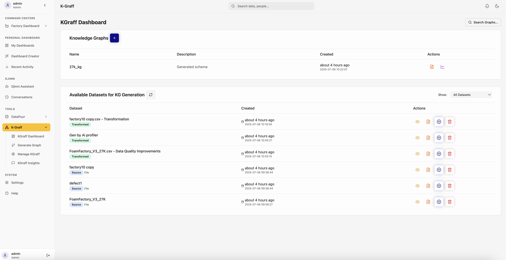

KGInsights (K-Graff)
- Home
- Getting Started
- Djinni Assistant
- Tools
- DataPuur
- KGInsights (You are here)
- API Reference
Table of Contents
- Introduction
- Features Overview
- Accessing KGInsights
- K-Graff Dashboard
- Generate Graph
- Data Source Selection
- Entity and Relationship Configuration
- Graph Generation Process
- Manage K-Graff
- Graph Visualization
- Graph Editing
- Graph Exploration
- K-Graff Insights
- Schema Management
- Best Practices
- Troubleshooting
Introduction
KGInsights (K-Graff) is the knowledge graph management module of the RSW platform. It enables users to create, visualize, explore, and derive insights from complex relationship networks within their data. By representing data as interconnected entities and relationships, K-Graff helps uncover hidden patterns and connections that might be missed in traditional tabular analysis.

Features Overview
- Graph Generation: Create knowledge graphs from structured data
- Graph Visualization: Interactive visual exploration of relationships
- Graph Management: Edit, update, and maintain knowledge graphs
- Schema Management: Define and manage entity and relationship types
- Network Analysis: Calculate centrality, clustering, and other metrics
- Path Discovery: Find connections between entities
- Pattern Recognition: Identify recurring structures and motifs
Accessing KGInsights
- Navigation:
- Click on "K-Graff" in the sidebar under Tools
-
Use the dropdown to access specific K-Graff features
-
Interface Components:
- K-Graff Dashboard: Overview of graph metrics and status
- Generate Graph: Create new knowledge graphs
- Manage K-Graff: Visualize and edit existing graphs
- K-Graff Insights: Analyze graph patterns and metrics
- Schema Management: Define entity and relationship types
K-Graff Dashboard
The K-Graff Dashboard provides a comprehensive overview of your knowledge graphs and available datasets:
- Knowledge Graphs:
- List of available knowledge graphs with names and descriptions
- Creation timestamps
- Quick access to graph actions (view, edit, delete)
-
Status indicators (e.g., "Generated 4 hours ago")
-
Available Datasets:
- List of datasets ready for knowledge graph generation
- Dataset status (Raw, Transformed)
- Creation timestamps
-
Available actions (generate graph, view details)
-
Quick Actions:
- Create new graph with the "+" button
- Generate graph from selected dataset
- Search for specific graphs or datasets
- Filter datasets by type
Generate Graph
Data Source Selection
- Navigate to KGInsights (K-Graff) > Generate Graph
- Select a dataset from the dropdown menu
- Enter a schema name for your knowledge graph
- You can also select data domains if applicable
KG Assistant
The KG Assistant helps you design your knowledge graph through natural language interaction:
- The assistant provides an AI-powered interface to help you create your graph schema
- You can ask questions like "How can I help with your schema design?"
- The assistant will guide you through the process of:
- Identifying entities in your data
- Establishing relationships between entities
- Defining properties and attributes
- Optimizing the graph structure

Schema Configuration
- Schema Options:
- Create a custom schema from scratch
- Generate schema automatically using AI
- Use a predefined schema template
-
Import an existing schema
-
Graph Generation:
- Click "Generate Schema" to create the knowledge graph schema
- Review the generated schema
- Make any necessary adjustments
- Click "Generate Graph" to build the complete knowledge graph
Graph Generation Process
- Validation:
- System validates configuration
- Checks for data consistency
-
Identifies potential issues
-
Processing:
- Entity extraction
- Relationship mapping
- Property assignment
-
Graph construction
-
Completion:
- Graph metrics summary
- Preview of generated graph
- Options to visualize or refine
Manage K-Graff
Knowledge Graph Management
- Navigate to KGInsights (K-Graff) > Manage Graphs
- View your knowledge graphs with detailed information:
- Graph name and schema information
- Creation timestamp
- Status indicators (e.g., "Updated about 4 hours ago")
- Data statistics (nodes, relationships, attributes)
-
Last updated timestamp
-
Select a graph to view its details:
- Overview tab with graph metadata
- Structure tab with node types distribution
- Visualization of the graph
Graph Visualization
- When viewing a graph, the visualization shows:
- Nodes representing entities (color-coded by type)
- Edges representing relationships
-
Interactive network diagram
-
Visualization features include:
- Node type distribution statistics
- Relationship counts and types
- Interactive zoom and pan
- Node selection and focus
-
Graph layout controls
-
Graph details panel shows:
- Schema ID and version
- Node count and types
- Relationship statistics
- Data source information
- Assessment metrics
Graph Exploration
- Search and Filter:
- Search for specific entities
- Filter by entity/relationship types
- Filter by property values
-
Show/hide specific subgraphs
-
Navigation:
- Expand/collapse node neighborhoods
- Follow relationship paths
- Bookmark important nodes
-
Create custom views
-
Detail Panels:
- Entity details
- Relationship details
- Connected entities
- Historical changes
K-Graff Insights
Knowledge Graph Insights
- Navigate to KGInsights (K-Graff) > K-Graff Insights
- View the insights dashboard with:
- Suggested queries section
-
Recent activity history
-
Interact with the AI assistant to analyze your knowledge graph:
- Request relationship analysis
-
Discover patterns and insights
-
Use the suggested queries for quick insights:
- Analyze node types and distribution
- Identify key relationships
- Find critical paths between entities
Interactive Analysis
The KG Assistant in the Insights section allows for interactive analysis of your knowledge graph:
- Type natural language questions about your graph, such as:
- "What are the main connections between Factory and Location?"
- "Show me the shortest path between Supplier and Batch"
-
"Which nodes have the highest connectivity?"
-
The assistant will process your query and provide:
- Visual highlights on the graph
- Text explanations of findings
- Suggested follow-up questions
-
Actionable insights
-
Use the chat history to build on previous analyses and create a comprehensive understanding of your graph data
Schema Management
When generating a knowledge graph, you can create and manage schemas to define the structure of your graph:
- Schema Creation Options:
- Define a custom schema manually
- Generate schema automatically with AI assistance
-
Use the Schema Name field to name your schema
-
Schema Components:
- Node types (e.g., Factory, Location, Machine, Batch)
- Relationship types (e.g., located_at, supplies_to)
- Node properties and attributes
-
Relationship properties
-
Schema Generation:
- Click "Generate Schema" to create a new schema
- The system will analyze your dataset and suggest appropriate entity and relationship mappings
- Review the generated schema in the visualization panel
-
Make adjustments as needed before finalizing
-
Schema Visualization:
- View the node type distribution
- See relationship connections between different node types
- Examine the overall graph structure
- Identify key entities and their connections
Best Practices
Graph Creation Best Practices
- Plan your schema:
- Define clear entity types
- Establish meaningful relationship types
-
Document property semantics
-
Start small and iterate:
- Begin with core entities and relationships
- Test with sample data
-
Expand incrementally
-
Ensure data quality:
- Clean data before graph creation
- Resolve entity duplicates
- Validate relationship logic
Graph Visualization Best Practices
- Focus on relevant subgraphs:
- Filter to show only relevant entities
- Use appropriate layout algorithms
-
Color-code by meaningful attributes
-
Balance detail and overview:
- Start with high-level view
- Drill down to details as needed
-
Create saved views for different purposes
-
Optimize visual clarity:
- Avoid overlapping nodes
- Use consistent visual language
- Provide context through labels
Analysis Best Practices
- Define clear questions:
- Start with specific analytical goals
- Choose appropriate metrics
-
Interpret results in business context
-
Combine multiple perspectives:
- Use different centrality measures
- Apply various clustering algorithms
-
Compare results across time periods
-
Validate insights:
- Cross-check with domain experts
- Verify with alternative data sources
- Test predictions with new data
Troubleshooting
Graph Generation Issues
- Processing Failures:
- Check data source validity
- Verify entity identifier uniqueness
- Review relationship mappings
-
Check for memory limitations
-
Schema Conflicts:
- Ensure data conforms to schema
- Check for missing required properties
-
Verify relationship constraints
-
Performance Problems:
- Consider sampling for large datasets
- Break complex graphs into subgraphs
- Optimize entity and relationship selection
Visualization Issues
- Rendering Problems:
- Reduce graph size for better performance
- Use filtering to focus on subgraphs
- Try alternative layout algorithms
-
Update browser or clear cache
-
Layout Issues:
- Adjust layout parameters
- Pin important nodes
- Use hierarchical layouts for complex graphs
- Apply clustering to simplify visualization
Analysis Issues
- Slow Analysis Computation:
- Limit analysis to relevant subgraphs
- Use approximation algorithms for large graphs
-
Schedule complex analyses for off-peak times
-
Unexpected Results:
- Verify algorithm parameters
- Check for data anomalies
- Consider alternative metrics
- Consult domain experts for interpretation
Previous: DataPuur | Next: Djinni Assistant
Last updated: July 6, 2025